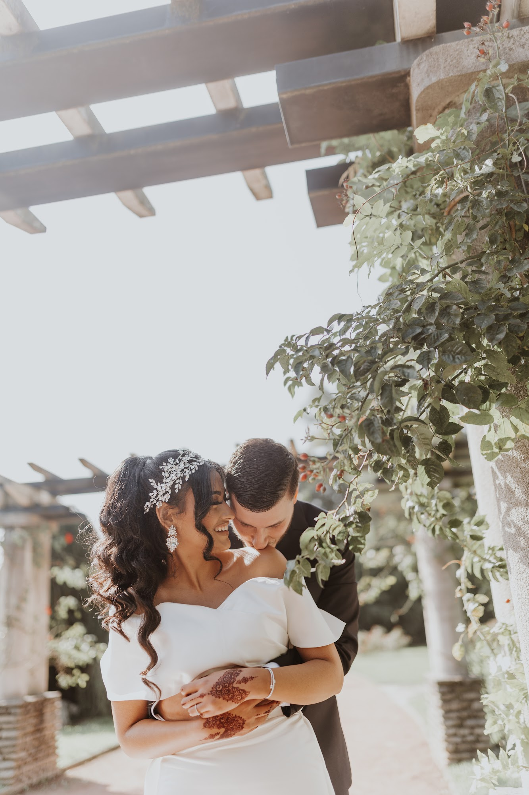
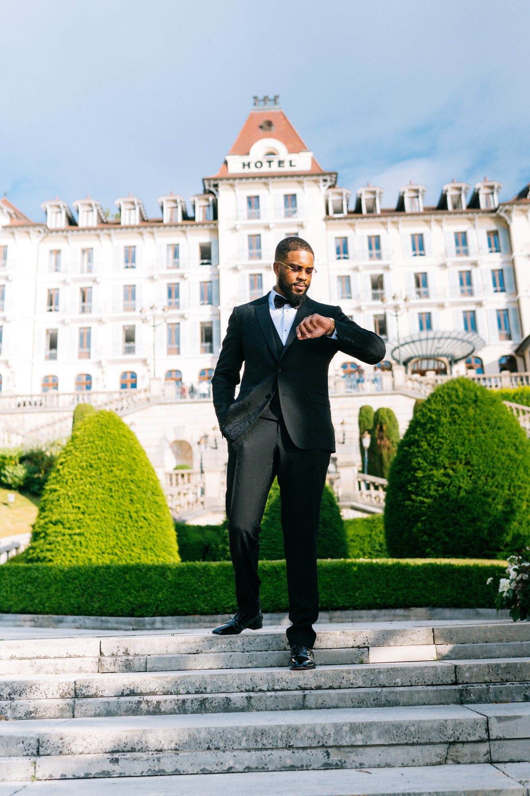

Why Planning a Winter Wedding in France Is a Great Idea
Choosing to host a winter wedding in France is one of the most romantic ways to celebrate your love story. Far from the summer heat and crowds, the cold season brings a soft, poetic atmosphere filled with cozy firesides, warm candlelight, and stunning natural landscapes. As a photographer and videographer based near Lyon, I love capturing the authentic emotion and rich textures of these intimate winter days.

Soft, flattering winter light for your portraits

During winter, the sun sits low on the horizon all day long, acting as a massive natural diffuser. This creates a gentle, wraparound illumination that eliminates harsh shadows and squinting eyes.
This soft glow adds an effortless cinematic quality to your images, highlighting subtle details in lace, warm fabrics, and joyful expressions without any harsh contrasts.
An intimate and cozy atmosphere for your guests
Winter celebrations naturally invite guests to gather closer. Exchanging vows inside a historic French chateau or a rustic Alpine chalet creates an immediate sense of warmth and togetherness.
Hot spiced wine, crackling fireplaces, and soft ambient lighting transform your reception into an inviting shelter, making your loved ones feel cozy and truly connected throughout the day.
More venue availability and peace of mind

Planning a wedding during peak summer months often involves tight schedules and limited venue dates. Moving your celebration to the off-season opens up incredible opportunities across the Lyon area and the French Alps.
Prestigious chateaux and boutique domains offer far more flexibility, allowing you and your vendors to work at a relaxed pace without the pressure of peak season timelines.
Elegant cold-weather fashion and rich textures

Winter weddings allow for sophisticated wardrobe choices that stand out. Think velvet suits, long-sleeved lace gowns, faux fur wraps, or tailored wool coats.
These rich materials add depth and movement to both photographs and films, creating an editorial feel that is both timeless and deeply personal.
Early dusk and magical evening celebrations
Since nightfall arrives earlier in winter, the transition from daytime formality to evening festivities happens smoothly. Fairy lights, chandeliers, and outdoor torches take center stage much sooner in the afternoon.
This extended night environment gives your banquet and dance party plenty of time to unfold naturally, giving you maximum hours to celebrate with your guests.

Frequently asked questions
What happens if it rains or snows on our wedding day?
We always plan ahead by identifying beautiful indoor spaces with natural light, such as glass conservatories or elegant salons. Outdoor sessions are kept short and fun, using stylish umbrellas or cozy coats between takes.
What is the best time for a winter wedding ceremony in France?
Since daylight fades around 4:30 PM or 5:00 PM, scheduling your ceremony for early afternoon (around 1:30 PM) ensures plenty of natural light for couple portraits and family photos before sunset.
Are outdoor portraits possible during cold weather?
Yes! We keep sessions brief and dynamic. Wearing hidden thermal base layers and having a coat or shawl nearby allows you to look relaxed and warm in front of the camera.
Can you recommend venues for a winter wedding near Lyon or the French Alps?
The region features historic castles with grand fireplaces in the Beaujolais, renovated stone barns in Isere, and luxury mountain chalets overlooking alpine lakes.
Planning a winter wedding in France? Let's get in touch to discuss your vision and craft timeless images of your story.
Let’s talk about your project